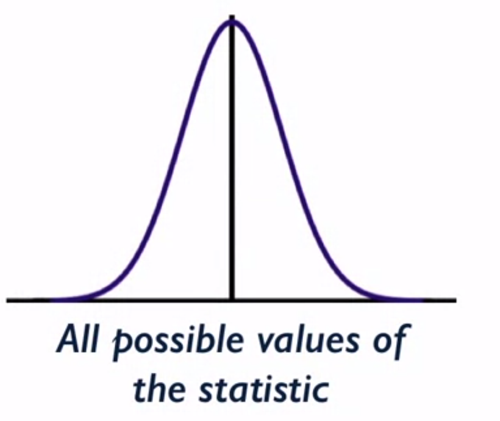
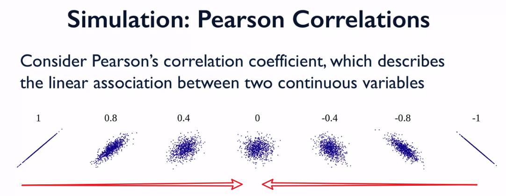
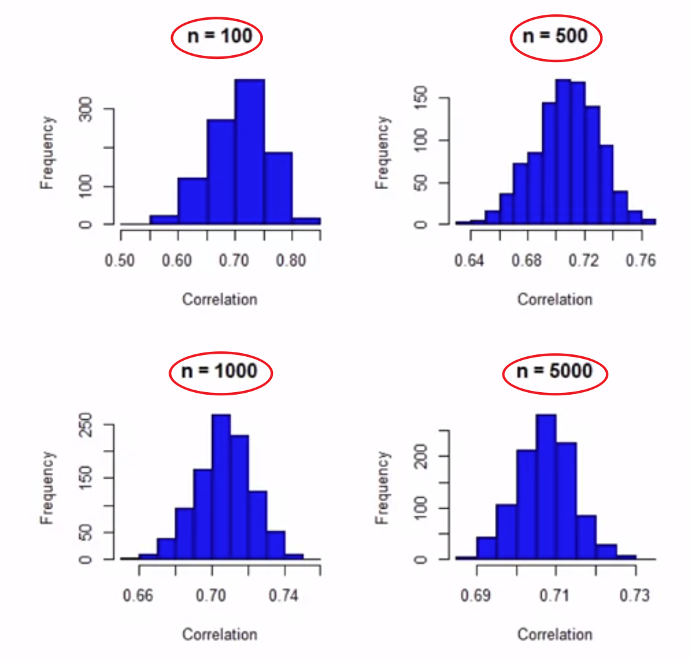
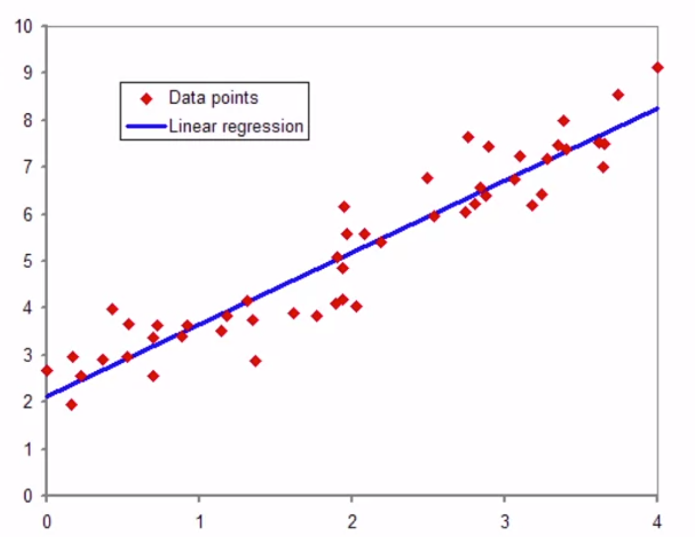
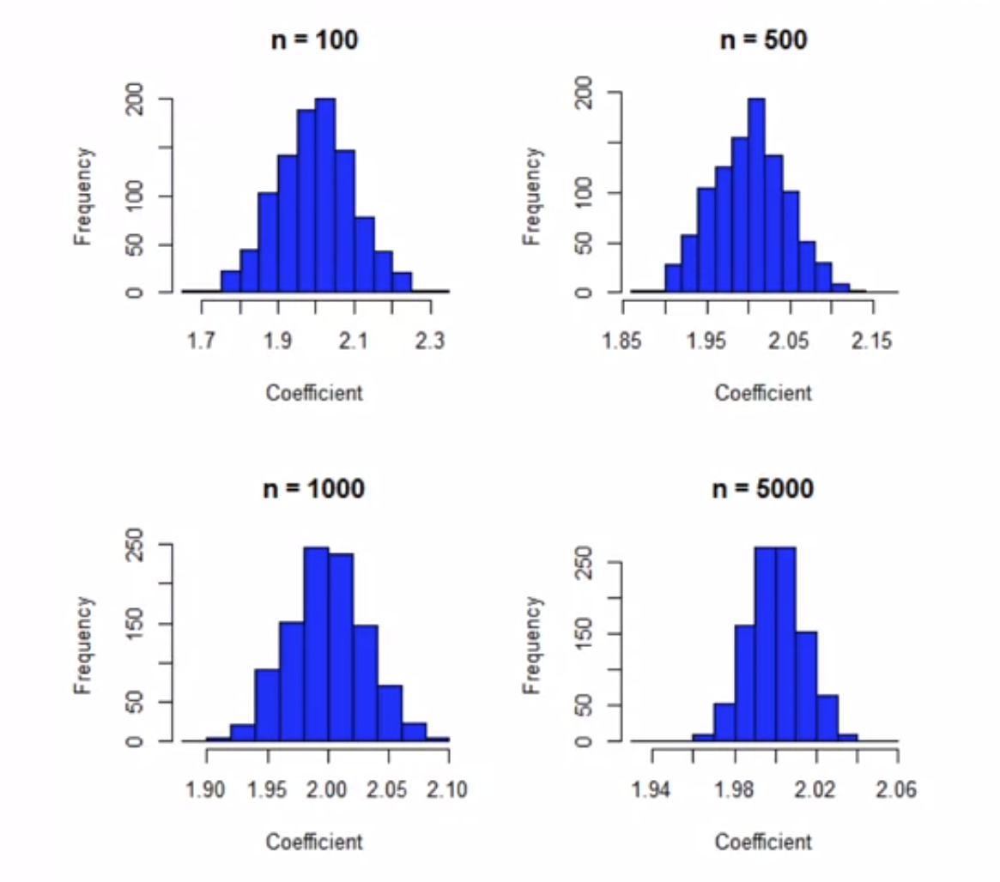

除了模拟均值的抽样分布，还可以来看看相关系数、回归系数的抽样分布是怎么样的？
Start with Me | Coursera - Understanding and Visualizing Data with Python week 4-6 - Beyond Means : Sampling Distributions of Other Common Statistics
An Interesting Result
- Given large enough samples, sampling distributions of most statistics of interest tend to normality (regardless of how the input variables are distributed)
- This (Central Limit Theorem) result drives design-based statistical inference, or frequentist inference
有趣的结果
当你从某个群体中得到一个足够大的样本时，大多数感兴趣的统计量的抽样分布会趋向于正态， 这与输入变量本身的实际分布情况无关

上图显示了一个抽样分布的例子，中心极限定理表明，给定一个足够大的样本，估计值的分布将趋向于正态分布
这个结果同样是基于中心极限定理，是驱动基于设计的统计推断，或者称为常量统计推断
例子：模拟皮尔逊相关系数
皮尔逊相关
皮尔逊相关系数描述了任何两个连续变量之间的线性关联

上图显示了几个假设的皮尔逊相关系数，展示了两个连续变量在散点图中的紧密相关程度
皮尔逊相关性为 1 / -1 的情况下，这两个变量有很强的线性关联
当皮尔逊相关性越来越接近于 0 时，这两个变量基本上没有任何相关性，只看到一团数据点
皮尔逊相关和简单的平均数很不一样
在 week 4-6 之前一直讨论均值的抽样分布，如week 4-5 使用均值模拟抽样分布
相关系数描述的是两个变量之间的线性关联，是数据分析中非常常用的统计学，用于描述变量之间的初始关联
平均数描述的是样本，也可能描述的是更大的群体
模拟抽样分布 -- 皮尔逊相关
假设群体的真实相关性是 0.7
具有相当强的正向相关性，不是一条完美的直线，但是两个变量在线性意义上仍然有很强的相关性
从真实相关性是 0.7 的群体中抽取 1000 个指定样本大小 n 的样本
简单随机抽样
对不同的样本大小进行处理，n = 100, 500, 1000, 5000

这些是所有模拟基于一定规模样本的相关系数的分布
在真正的群体中，相关系数是 0.7，如果有群体中每个人的所有数据，并计算皮尔逊相关系数，就会看到 0.7
图中可以看到100、500、1000、5000的样本大小，也就是每个样本都有对应的特定的大小
根据这个简单的随机样本的模拟数据来计算相关系数
关于这些抽样分布
所有的分布都是近似正态分布
不管样本大小，几乎都遵循正态分布
这些分布在不同样本上的估计值都像钟形曲线
而且都是以真实的相关性0.7为中心
也就意味着，简单的随机抽样是给我们一个无偏估计的相关系数
随着样本量 n 的增加，分布会变得更加对称，分散程度也会降低
- n = 100时，估计的相关系数范围在0.55~0.85之间
- 随着样本量增加，这个范围在缩小
- n = 5000时，估计的相关系数范围在0.69~0.73之间
- 说明了中心极限定理是有效的
例子：模拟回归系数
回归系数
回归可以评估多个变量之间的关系

上图描述了两个连续变量之间的线性关系，现在要关注的是一些预测变量 X 发生一个单位变化时，因变量 Y 的估计变化
通过线性回归，实际上得到了一个估计的斜率参数是多少，不像在相关系数分析中，只是得到了一个简单的相关描述
所以其实是想估计这个斜率（描述 X 变化一个单位时 Y 的变化），图中只是显示了对于各种假设的数据点，一个简单的线性回归模型对这些数据的拟合，描述了这两个变量之间的线性关系
模拟抽样分布 -- 回归系数
假设在感兴趣的人群中，真正的线性关系是由 y = 2x + error 这个回归方程来描述的，估计的真实斜率是 2
抽取1000个指定样本大小 n 的样本
对不同样本大小处理，n = 100, 500, 1000, 5000

关于这些抽样分布
- 所有的分布看起来都非常正常，而且相当对称
- 随着样本量 n 的增加，可以看见估计的回归系数的分布不断缩小
- 在假设的样本中，估计的差异性没那么大
- 这些不同的分布都是近似于正态分布，并且以真实值为中心，随着样本量n的增加，变得更加对称、有更小的分布
抽样分布特性
不管复杂程度如何，很多流行的统计学的抽样分布的特性：
- 趋于正态，趋于对称，趋于以真实值为中心
- 在较大的样本量中，估计值的差异更小
关键点：可以只根据一个样本来估计这些正态分布的方差
-> 能够对更大的群体进行推断，同时能够考虑到抽样的变异性
Test
Suppose that the parameter you are interested in estimating for a given population is a proportion. That is, what fraction of individuals in a population has a characteristic of interest? This means that the variable of interest is a binary variable, taking on values of 1 (for those with the characteristic) and 0 (for those without the characteristic). If we select a large probability sample in order to estimate the proportion, what can we expect about the sampling distribution for this estimated proportion?
A. The sampling distribution will not be normal, because the variable only takes on two possible values.
B. The sampling distribution will be normal and centered at the true population proportion, and the larger the sample size, the more variance that the sampling distribution will have.
C. The sampling distribution will be normal and centered at the true population proportion, and the larger the sample size, the less variance that the sampling distribution will have.
D. We don’t have enough information to formulate an expectation.
参考答案
Test : C
A proportion is the mean of a binary variable, and a commonly estimated parameter. The central limit theorem suggests that the sampling distribution of this type of mean will be approximately normal, with less variance as the sample size becomes larger. This is regardless of the fact that the variable of interest is binary.
Non-Normal Sampling Distributions
- Not all statistics have normal sampling distributions
- In the cases, more specialized procedures needed to make population inferences (e.g., Bayesian methods)
- Example ： variance components in multilevel models
非正态抽样分布
- 并不是所有统计学都会像均值、相关系数、回归系数那样有正态的抽样分布
- 在这种情况下，需要更专业的程序对群体进行推断（贝叶斯方法论）
- 之后会讲到的例子：方差分布的统计量
- 在多层次建模的背景下，这些统计量的抽样分布一般不是正态分布，之后会讲到在这些情况下如何进行推断